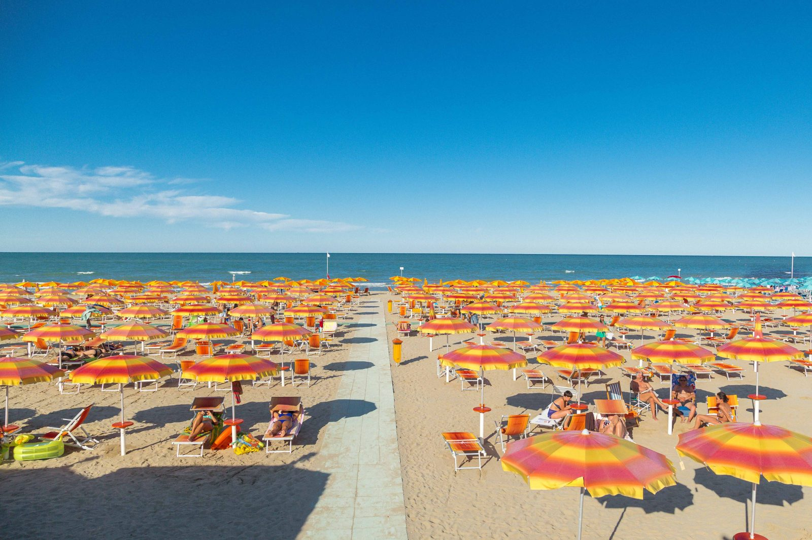

Giulianova beach
In Giulianova, a visit to the beach is a must. This stretch of coastline is equally popular with tourists and locals, as it offers a wide range of activities, restaurants and beautiful views. Although it is livelier during the summer, the beach area is just as charming and full of life in the winter, when it is populated with people taking long walks, running, cycling, or picnicking on the beach. This is due to the area's temperate climate that makes the winters not too harsh.

During the summer months, Giulianova's beaches come alive with a variety of activities, perfect for visitors of all ages. The sandy shorelines are ideal for sunbathing, while the calm, clear waters allow for swimming, paddleboarding and kayaking. Beachgoers can also enjoy beach volleyball and other sports, with many lidos offering equipment rental services. Families can take advantage of the well-equipped beach clubs, where children can enjoy play areas or participate in fun games organized by the staff. For those who want to relax, the long stretches of sand offer plenty of room to lounge in the sun, while the lively atmosphere of the waterfront bars and cafes keeps the atmosphere alive.

Giulianova is also known for its excellent selection of restaurants and lidos, making it a popular destination for food lovers. A variety of restaurants can be found on the waterfront, ranging from seafood kiosks to fine dining. Fresh seafood is the highlight. The lidos, many of which double as beach clubs, often have beachfront restaurants, where guests can enjoy meals with their feet in the sand and a breathtaking view of the sea. Whether you are looking for a relaxing lunch on the beach or a romantic dinner by the sea, Giulianova has much to offer for every taste and occasion.